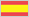

Azabache
Rött vinKryddigt & Mustigt
SpanienRioja
- Årgång
- 2008
- Alkoholhalt
- 14,0 %
- Sockerhalt
- Mindre än 3,0 gram/liter
- Användning
- Serveras vid 16-18°C till rätter av fläsk- eller lammkött.
- Smak
- Kryddig smak med inslag av fat, mörka körsbär, örter, lakrits och kakao.
- Fyllighet
- Strävhet
- Fruktsyra
- Gris
- Lamm